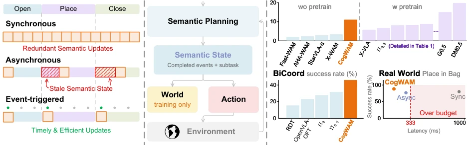
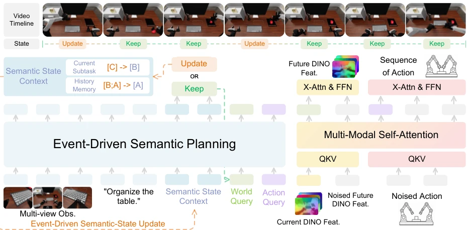
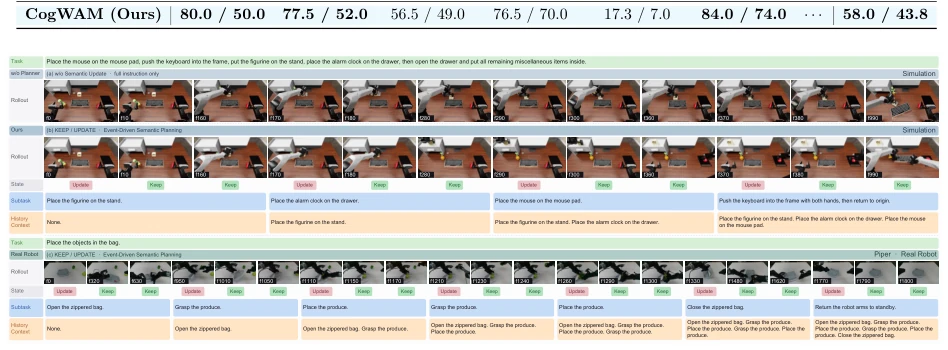
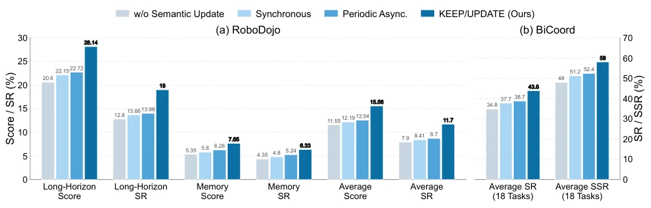
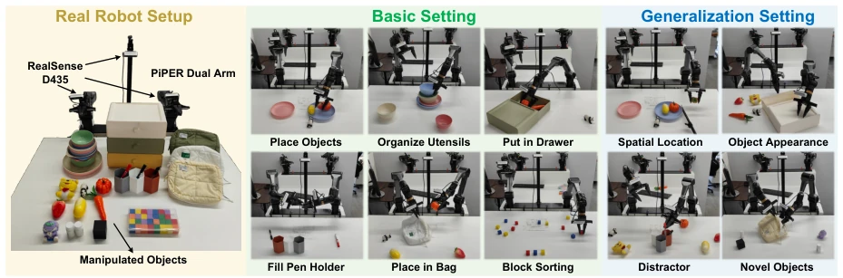
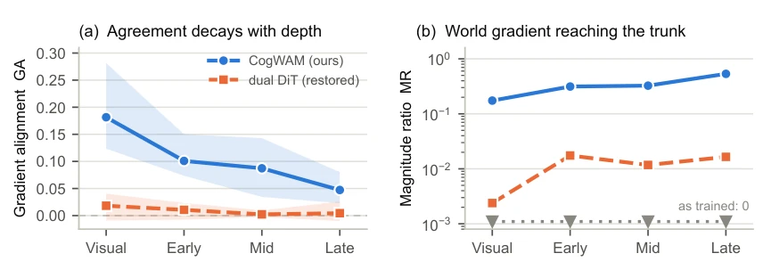
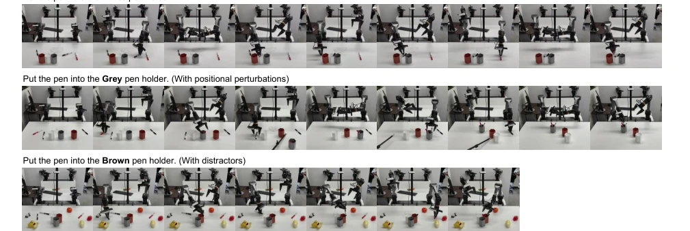

This paper on CogWAM serves as a "wake-up call" for robot models that merely "describe pictures". It avoids those flashy end-to-end hallucinations, instead forcibly incorporating a "semantic state machine" to ensure the robot knows whether it "just finished" a task. This "event-driven" update mechanism is far smarter than brute-force methods that recalculate every frame, saving computational power and preventing "schizophrenia". However, this method relies heavily on the definition of "events"; if task phase divisions in training data are unclear, or environmental interference leads to state judgment errors, this "wake-up call" might directly turn into "confusing soup". Additionally, although it boasts achieving leaderboard rankings without pre-training, regarding generalization in complex physical interactions, it is still limited by the predictive capabilities of the underlying world model, remaining some distance from true "general intelligence". Overall, it is a pragmatic work finding a balance between engineering implementation and theoretical architecture, but do not expect it to solve all long-horizon planning problems.
The core pain point faced by existing embodied intelligence models is the disconnection between "semantic cognition" and "physical control". Although Vision-Language-Action (VLA) models [7, 8] excel at understanding instructions and World-Action Models (WAM) [13-19] can predict the future, simply stacking the two does not guarantee alignment between local actions and task progress. For example, a robot may predict reasonable actions, yet be repeating completed steps or skipping necessary phases. Existing works such as π0.5 [4] and Hi Robot [6], although introducing high-level reasoning or memory, often lack explicit task progress representation, leading to subtask drift or repetition in long-horizon tasks. Furthermore, although WALL-WM [31] attempts to organize semantic events, it fails to effectively decouple semantic evolution from control frequency. CogWAM aims to solve this "alignment" problem, ensuring task progress is persisted across multiple action blocks through an explicit semantic interface, avoiding redundant computation and state obsolescence.

Figure 1: Overview of CogWAM. (a) Event-triggered updates maintain a persistent Semantic State while avoiding redundant updates and stale states. (b) The Semantic State couples semantic planning with world prediction and action generation through a closed-loop execution loop. (c) Benchmark results and real-world success–latency trade-off.
The core of CogWAM is a "cognitive-guided world-action model", whose architecture is divided into three key parts. First is "event-driven semantic state update": the model maintains a persistent Semantic State, recording completed events and current subtasks. It does not update every step, but predicts a KEEP/UPDATE decision via VLM, updating the state only when semantic transitions are observed, thereby decoupling semantic time scales and control time scales. Second is "progress-conditioned world-action interface": the model introduces two sets of learnable queries (WORLD Query and ACTION Query), which share the same Semantic State as context, but extract specific information respectively to predict future multi-view DINO features and generate continuous actions. This design allows task-level semantic sharing while retaining the specificity of physical goals. Finally is "latent world-action modeling": adopting MoT architecture, the World branch predicts future features as an auxiliary target during training, and the Action branch directly generates actions. Joint optimization is adopted during training, and boundary-aware semantic sampling and progressive semantic conditioning strategies are introduced to address state sparsity and training-inference mismatch issues. During inference, the World branch is directly removed, utilizing only current observations and the maintained semantic state to generate actions.

Figure 2: Architecture of CogWAM. An event-triggered KEEP/UPDATE mechanism maintains a persistent Semantic State during closed-loop execution. WORLD and ACTION queries condition parallel branches for future multi-view DINO feature prediction and continuous action generation.
The paper was evaluated on two simulation benchmarks, RoboDojo and BiCoord, as well as on a real dual-arm robot. On RoboDojo, CogWAM achieved an average Score of 15.56% and a success rate of 11.70% without pre-training, significantly outperforming baselines such as Fast-WAM, with notable improvements on long-horizon and memory tasks. On BiCoord, its Stage-level Success Rate (SSR) reached 58.0%, outperforming strong baselines such as π0.5. Ablation studies indicate that introducing semantic states and event-driven update strategies is key to performance improvement; compared to synchronous updates, the event-driven strategy significantly reduced the number of semantic state rebuilds (16.4 times) while maintaining low latency. In real-world experiments, CogWAM demonstrated robustness on tasks such as "put object in bag", and inference latency was controlled within budget, proving its engineering feasibility.

Figure 3: Qualitative Analysis of Semantic State Progression. Simulation rollouts illustrate how persistent Semantic States track task progress across action chunks, reducing subtask drift, repetition, and premature transitions. The real-world rollout visualizes the predicted KEEP/UPDATE decisions together with the corresponding Semantic States throughout execution.

Figure 4: Effect of Semantic State and Update Strategies. Task performance on (a) RoboDojo (Score / SR) and (b) BiCoord (SR / SSR), shown with benchmark-specific vertical scales. w/o Semantic State conditions the policy only on the current observation and global task instruction, while the remaining variants differ in how the Semantic State is updated.

Figure 5: Real-world setup and task examples. CogWAM is deployed on a dual-arm AgileX PIPER platform with two 6-DoF manipulators and parallel grippers, using synchronized RGB observations from one fixed head-mounted and two wrist-mounted Intel RealSense D435 cameras.

Figure 6: World and Action gradients inside the shared VLM, by depth. (a) Gradient alignment, with 95% bootstrap intervals over 120 batches. CogWAM is significantly positive at every depth and decays inward from the visual tower; the dual-DiT baseline with its gradient path restored is indistinguishable from zero throughout. (b) World-gradient magnitude relative to the action gradient. As trained, the dual-DiT baseline detaches the world branch, so no world gradient reaches the trunk and GA is undefined.
其他图片Other Figures

Figure 7: Language grounding under visual perturbations. CogWAM follows instructions specifying different target pen holders: white, grey, and brown. The grey-holder setting introduces spatial perturba- tions of the target objects, while the brown-holder setting introduces additional distractor objects. Despite these variations, CogWAM consistently grounds the instructed target and completes the corresponding ma- nipulation behavior.